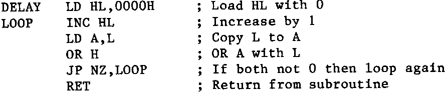

INMC 80 News |
May–September 1981 · Issue 4 |
| Page 50 of 71 |
|---|
second, so two hundred times round the delay loop will be appropriate. So let’s draw up the spec. of the delay routine:
1) Set B counter to 200 (decimal)
2) Delay for 5mS
3) Do the loop until B is 0
Now before we go ahead and use the routine in NAS-SYS, we ought to check that it’s not going to muck up anything else. So have a look at it. Go on, see if you can figure out how it works before reading on. Got it, good. It works almost like the counting routine I wrote originally, except that it counts in the A register, and throws in a couple of PUSHes and POPs for no better reason than to waste time. The important point is that the only thing that gets changed is the A register, as, for the routine to return, the A register has to contain 0, so, on the return the A register will contain 0. Now that doesn’t matter at all, as the next thing we do with the A register is to fill it with the next character to be put on the screen. But watch out, NAS-SYS and Nasbug usually (but not always) ensure that things are unchanged except where neccessary, but don’t assume this to always true. CP/M for instance can be relied upon to change almost everthing in sight when an internal routine is called.
So the delay routine suddenly looks like this:
Now there is something I’ve (deliberately) forgotten. Yup, you got it, there’s a location there which I fixed as a label, and I didn’t declare it. I know what it is, and you should know (because I told you earlier. But, as my junior school English teacher used to say, ‘What about the man from the moon, he doesn’t know what you’re on about because you haven’t told the complete story.” Mind you, if there are men in the moon, they must be very wise, as they had the good sense to stay out of sight when the Yanks arrived. Anyway, a new line, 15:
15 RDEL EQU 0038H
Now we have shortened the delay routine considerably, introduced the concept of nested subroutines, and ended up making the program monitor dependent. The first one was a good idea, short routines are always easier to understand. Nested subroutines are also a good idea as they lead to simple, easy to understand modules, and although they take longer to execute, the trade off between speed and simplicity must be in favour of simplicity for the purposes of this demonstration, after all, the nested subroutine is an arbitory delay, so speed in accessing it can hardly be important. The last point about making it monitor dependent is very arguable. The program now depends on NAS-SYS or Nasbug being present, so it’s dedicated to a Nascom using one or other of the monitors (I don’t know about NAS-MON, I’ve never tried it). The program is now monitor dependent, unlike my first attempt, where the only requirement was RAM at the point I chose for the program to run, and a screen RAM at the point where I put the characters. On a little example like this, it’s not very relevant, but when you start using large chunks of the monitor, routines like ‘KBD’ and ‘CRT’ then programs written will be several hundred bytes shorter, but will be very definitely monitor dependent.
Now for the last part of this lesson. (Thank goodness for the little space counter on Diskpen, it tells how close to the end I am before t get there.) The HL register has now been freed by the use of RDEL in the monitor. Now HL is a very useful register, it is the main ‘pointer’ register in the Z80, and may be used for ‘pointing at’ a memory location whilst the byte ‘pointed at’ is manipulated. Lets rewrite the whole shooting match, using HL as a pointer, and not get too thorough about the explanations, to see how you get on.
| Page 50 of 71 |
|---|